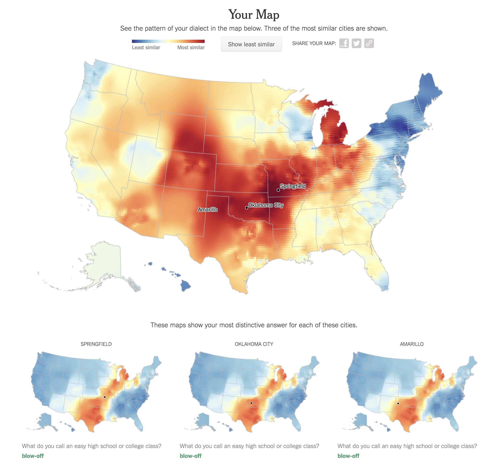
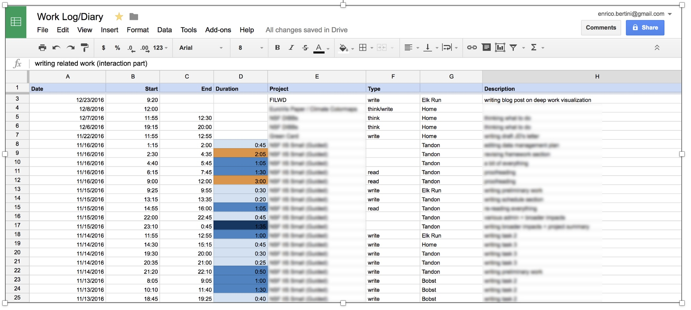
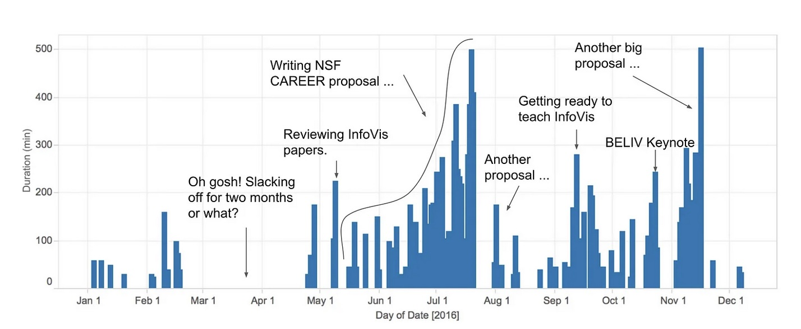
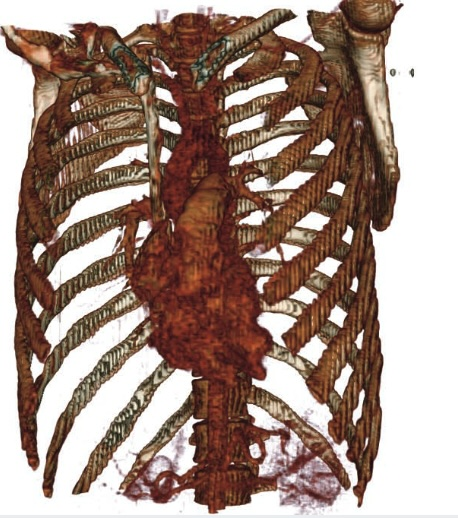

CS-GY 9223: Visualization for Machine Learning
Fall 2025 - Course Introduction & Syllabus
NYU Tandon School of Engineering
2025-09-08
Welcome to Visualization for Machine Learning!
CS-GY 9223 Section N
- Instructor: Claudio Silva (csilva@nyu.edu)
- Time: Mondays 5:00 PM - 7:30 PM
- Location: Jacobs Hall, Room 473
- Office Hours: TBD
Teaching Team
- TA: TBD
- Grader: TBD
- Discord: Join Course
About Me
Claudio Silva
- Institute Professor at NYU
- Research in visualization, data science, and urban computing
- Extensive experience teaching VisML and InfoVis courses
Contact
- Email: csilva@nyu.edu
- Website: ctsilva.github.io
- Office Hours: TBD
Course Prerequisites
Essential Requirements
- Solid programming expertise at graduate level in CS or Data Science
- JavaScript/D3.js experience helpful but not required - will be covered in class
- Python programming - expected for ML components
- Foundation in either data visualization or machine learning
What We’ll Use
- JavaScript & D3.js
- Modern web technologies (HTML, CSS, SVG)
- Python & ML libraries (NumPy, Pandas, Scikit-learn)
- Git/GitHub for version control
- Modern web browser
- Text editor/IDE (VS Code recommended)
- Node.js for JavaScript development
Warning
If you have no knowledge of machine learning, this course might not be appropriate for you. Please contact the instructor if unsure.
Course Description
Visual Analytics for Machine Learning
This is a research-oriented course on visualization for machine learning, where all students will work on a guided research project.
Visual Analytics Foundation
- Improving human analytic processes
- Understanding, reasoning, and decision making with data
- Combining automated and human-driven processes
Machine Learning Focus
- Rapid growth in ML drives visualization research
- Visualization techniques for ML pipelines
- Interactive visual analytics for model understanding
Fast-Changing Field
This material is at the cutting edge of computing research, bridging visualization and machine learning communities.
Course Learning Objectives
After this course, you will be able to:
- Understand the role of visualization in the machine learning pipeline
- Design effective visualizations for different types of ML models and data
- Implement interactive visualization systems using D3.js and modern web technologies
- Evaluate ML models through visual analytics
- Create visual explanations for complex ML systems
- Critique existing visualization approaches for ML
- Develop novel visualization techniques for emerging ML challenges
Overall Goal
Make you a more effective data scientist fluent in the connections between visualization and machine learning.
Course Structure
Weekly Format (2.5 hours)
Lectures + Hands-on Programming
- Theory and concepts
- Practical sessions within the block
- Research paper discussions
- Live coding demonstrations
Course Arc
- Part 1: Visualization primer
- Part 2: Model assessment, white/black-box explainers
- Part 3: Dimensionality reduction (PCA, t-SNE, UMAP)
- Part 4: Advanced topics (TDA, deep learning visualization)
Tip
We strive to have practical sessions complement theoretical materials within each class meeting.
Reading Material
No Textbook - Recent Research Focus
Most lectures based on recent technical papers not yet incorporated into textbooks.
Expected Preparation
- Read corresponding papers prior to each lecture
- Suggested reading materials provided for each class
Supplemental References
Data Visualization Curriculum - Jeff Heer
Observable NotebooksA Course in Machine Learning - Hal Daumé III
PDF LinkInterpretable Machine Learning - Christoph Molnar
Online Book
Introduction to Machine Learning - Etienne Bernard
Wolfram GuideDeep Learning - Goodfellow, Bengio, Courville
Online VersionUnderstanding Deep Learning - Simon J.D. Prince
Online Book
Research Project
Substantial Research Component
Project Structure
- Groups of 2-3 students (or solo with permission)
- Reproduce prior work or implement novel research idea
- Demonstrate prior work and your project to class
- No group changes once finalized
Timeline
- Week 3: Team formation
- Week 5: Project proposal due (4 pages)
- Week 8: Mid-term update due (1 page)
- Weeks 14-15: Final presentations
- December 11: Final report due (8 pages)
Research Skills Development
This project helps develop research skills through hands-on experience with cutting-edge visualization techniques.
Assessment Overview
No Midterm or Final Exam!
Assignments
50%
Weekly programming assignments
Project Proposal
10%
4-page writeup
Project Updates
10%
1-page writeup
Full Project
25%
8-page writeup + presentation
Participation: 5%
Assignment Details
Programming Focus
Weekly programming assignments for the first half of the semester, focusing on implementing visualization techniques for ML. These build the technical skills needed for the final project.
Late Submission Policy ⏰
| Days Late | Penalty |
|---|---|
| 1-5 days | 20% per day |
| After 5 days | 0 points (maximum grade) |
Important
After 5 days late, your assignment will receive a maximum grade of zero.
Important Policies
Academic Integrity
- Submit your own original work
- Cite all sources and note collaboration
- Excessive collaboration beyond discussion is a violation
- You must be able to explain/re-derive anything you submit
AI Policy
We embrace AI as a tool, not a replacement
Allowed Uses ✅
- Learning concepts and debugging
- Code suggestions and explanations
- Assignment assistance with disclosure
- Exploring new techniques
Requirements ⚠️
- Disclose AI usage in submissions
- Understand all code you submit
- Be able to explain your work
- You’re responsible for errors
Note
AI tools are valuable learning aids, but technical interviews won’t have them available. Balance tool use with fundamental understanding. :::
Course Schedule (Tentative)
Fall 2025 Schedule
| Week | Date | Topic |
|---|---|---|
| 1 | Sept 8 | Introduction to Visualization - Part I |
| 2 | Sept 15 | Introduction to Visualization - Part II |
| 3 | Sept 22 | Model Assessment |
| 4 | Sept 29 | White Box Methods |
| 5 | Oct 6 | Black Box Methods |
| 6 | Oct 20 | Dimensionality Reduction |
| 7 | Oct 14 (Tue) | Deep Learning Visualization (Make-up) |
Important Dates
- Oct 13: Fall Break - No Monday Class
- Oct 14: Make-up Class (Tuesday)
- Dec 8: Last Class
- Dec 11: Final Project Reports Due
Accessibility & Support
Moses Center for Students with Disabilities
- Contact: mosescsd@nyu.edu
- Phone: 212-998-4980
- Location: 726 Broadway, 3rd floor
- Register for accommodations if needed
Getting Help
- Discord: Join Course - Primary communication channel
- Office Hours: Will be posted on Discord
- Email: For private matters only
- Course Website: ctsilva.github.io/2025-VisML-CSE/
Questions?
Any questions about the course?
- Course structure and objectives
- Grading policies and timeline
- Prerequisites and technical requirements
- Projects and assignments
- Schedule and important dates
End of Course Logistics
- Any questions?
BREAK
- 5 minutes
Self Introduction for VisML 2025
What is Information Visualization? Why Use It?
“The use of computer-supported, interactive, visual representations of abstract data to amplify cognition.”

Slides based on material from Prof. Enrico Bertini
The Power of Visualization: Discovery
John Snow’s Cholera Map (1854)
- Mapped cholera deaths in London
- Revealed cluster around Broad Street water pump
- Visual evidence stopped the outbreak
Tip
Takeaway: Visualization is a powerful tool for discovery and finding patterns invisible in raw data.

The Power of Visualization: Storytelling
Charles Minard’s Map of Napoleon’s March (1869)
- Widely considered one of the best statistical graphics ever created
- Shows six variables simultaneously:
- Army size
- Location & direction
- Temperature
- Distance & time
Tip
Takeaway: Visualization is a powerful medium for dense, high-impact storytelling.

The Power of Visualization: Exploration
NYT: “How Y’all, Youse and You Guys Talk” (2013)
- Modern, interactive visualization
- Built with web technologies (like D3.js!)
- Allows personal exploration of dialect data
- Engages users through personalized results
Try it yourself: NYT Dialect Quiz
Tip
Takeaway: Visualization can be a dynamic interface for personal data exploration.

Key Concepts
- Computer-Based
- Visual Representation
- Abstract Data
- Interactive
- Amplify Cognition
Slides based on material from Prof. Enrico Bertini
Abstract Data
Data with no obvious/natural visual representation
 
Slides based on material from Prof. Enrico Bertini
Abstract Data
Data with no obvious/natural visual representation

Slides based on material from Prof. Enrico Bertini
Interactive
Users can change what is visualized and how it is visualized.
Slides based on material from Prof. Enrico Bertini
Amplify Cognition
- Solve problems with data with less effort, in a shorter time, and more accurately.
- … or even be able to do things it would be impossible to do without a computer and a graphical representation.
Slides based on material from Prof. Enrico Bertini
Cognitive artifacts: tools that help us think!
- Try to multiply 34 x 72 using exclusively your mind …
- … now do it again using pen and paper.
Slides based on material from Prof. Enrico Bertini
Why is it easier?
- … because we can store intermediary results in the paper rather than keeping the information in mind. That is, part of the memory is in the world rather than in your head.
Slides based on material from Prof. Enrico Bertini
Let’s play the “game of 15” …
- The “pieces” for the game are the nine digits: 1, 2, 3, 4, 5, 6, 7, 8, 9. Each player takes a digit in turn. Once a digit is taken, it cannot be used by the other player. The first player to get three digits that sum to 15 wins.
- Here is a sample game: Player A takes 8. Player B takes 2. Then A takes 4, and B takes 3. A takes 5.
- Question 1: Suppose you are now to step in and play for B. What move would you make?
Slides based on material from Prof. Enrico Bertini
Now let’s play a different game: tic-tac-toe
Players alternately place a naught (O) or a cross (X) in one of nine spaces arranged in a rectangular array. Once a space has been taken, it cannot be changed by either player. The first player to get three symbols in a straight line wins. Suppose player A is X and B is O, and the game has reached the state on the right.
Question 2: Suppose you are now to step in and play an O for B. What move would you make?
Slides based on material from Prof. Enrico Bertini
Problem Isomorphs (Herbert Simon)
- The two problems are equivalent!
Slides based on material from Prof. Enrico Bertini
Why use visualization?
- Explanatory
- Exploratory
- Confirmatory
Slides based on material from Prof. Enrico Bertini
Why use a graphical representation?
- Large parts of our brain are devoted to spatial processing
Slides based on material from Prof. Enrico Bertini
Why use a computer to visualize data?
Slides based on material from Prof. Enrico Bertini
Why use interaction?
Each visualization can only answer a subset of questions.
With interaction the user can change what is visualized and how to answer a multitude of questions.
Also one cannot visualize everything at once.
Slides based on material from Prof. Enrico Bertini
How do you assess the quality of a visualization?
- Isn’t it subjective? Some people like A, whereas some others like B.
- Some visual representations are better than others at solving particular problems …
Slides based on material from Prof. Enrico Bertini
Designing effective visualizations requires
- Knowing the design space
- Being able to compare the solutions
- … in turn comparing the solutions requires understanding human perception.
Slides based on material from Prof. Enrico Bertini